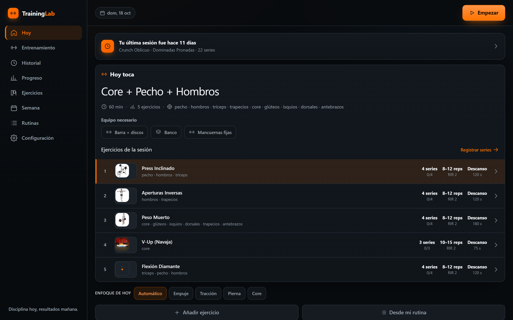
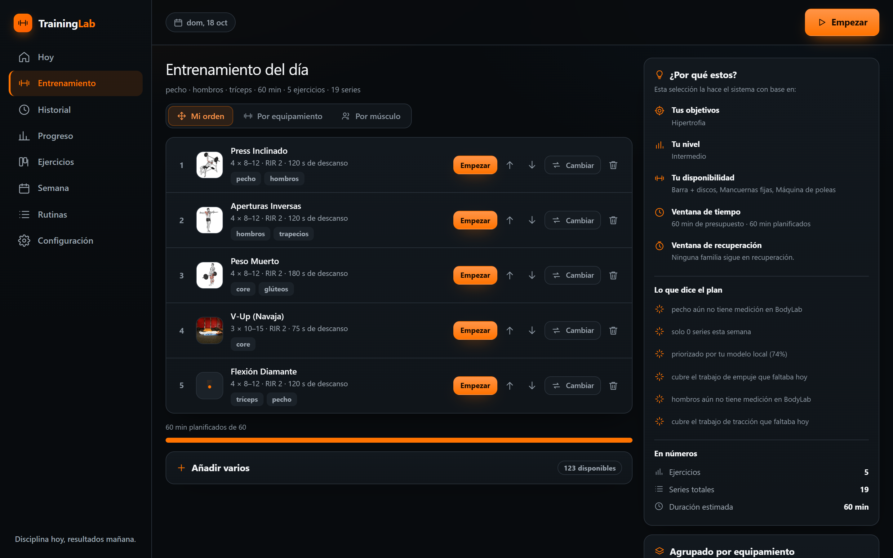
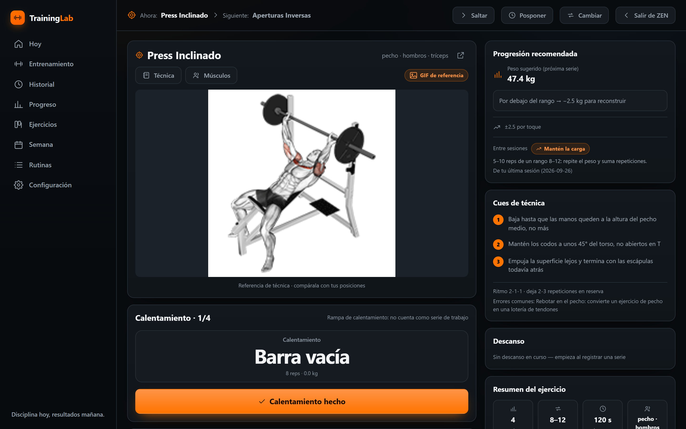
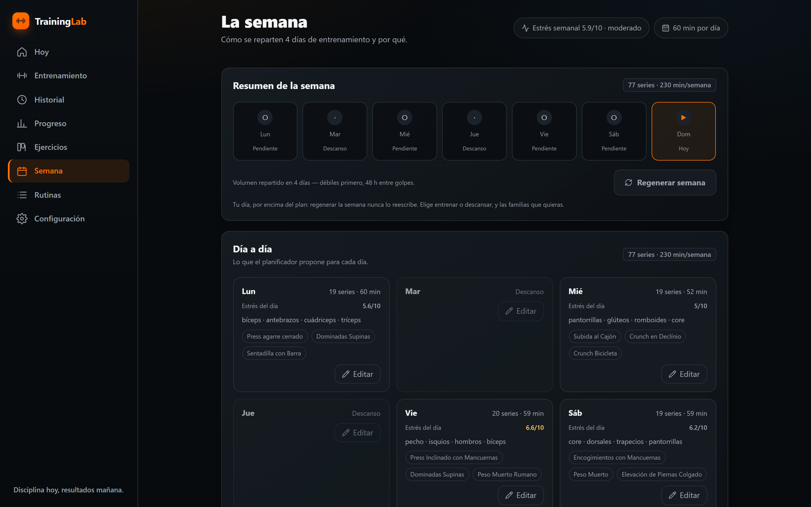
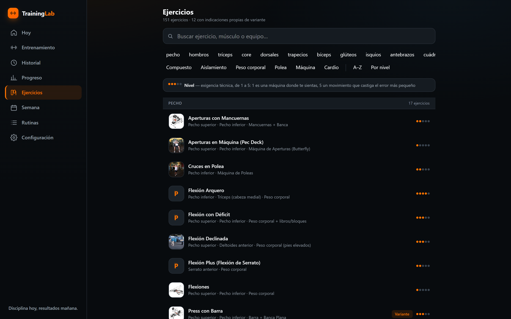

TrainingLab · capturas PC 1440 × 900 y móvil 390 × 844
Tomadas el 2026-10-18 contra el bundle real (vite build, con
Entrenamiento (02) ya portado) sembrado con los datos del dueño:
Buendia, 28/09/2005 (21 años), 176 cm, 76 kg, sexo masculino, y su
registro real importado (owner-training-log.csv: 19 sesiones,
442 series, 149 107 kg de volumen, 02/09/2026 → 07/10/2026). Cada captura
abre un contexto nuevo, siembra el log por las vías de la app y
afirma una cadena visible antes de guardar el PNG.
Escritorio

01 · Hoy — solo Hoy: día, reanudar, plan de hoy, enfoque, notas
y Estado de hoy.

02 · Entrenamiento — la cola del día: orden propio con subir y
bajar, cambiar, quitar, «¿Por qué estos?», agrupación por equipamiento
y «Añadir varios» con prescripción común.

03 · Sesión (ZEN) — registro serie a serie, demo de técnica,
progresión y descanso.

04 · Semana — 7 días, estrés semanal y edición por día.

05 · Ejercicios — 151 ejercicios, filtros por familia y equipo.